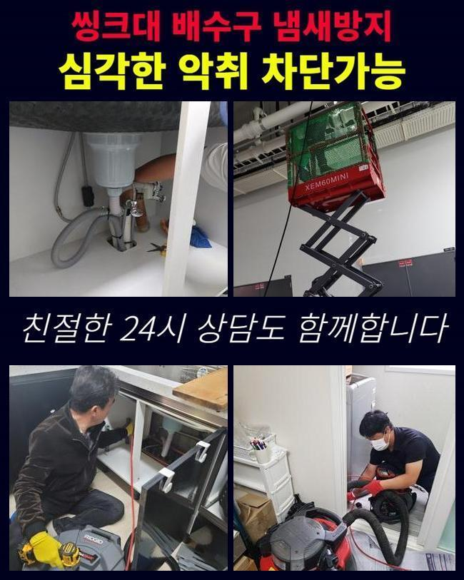
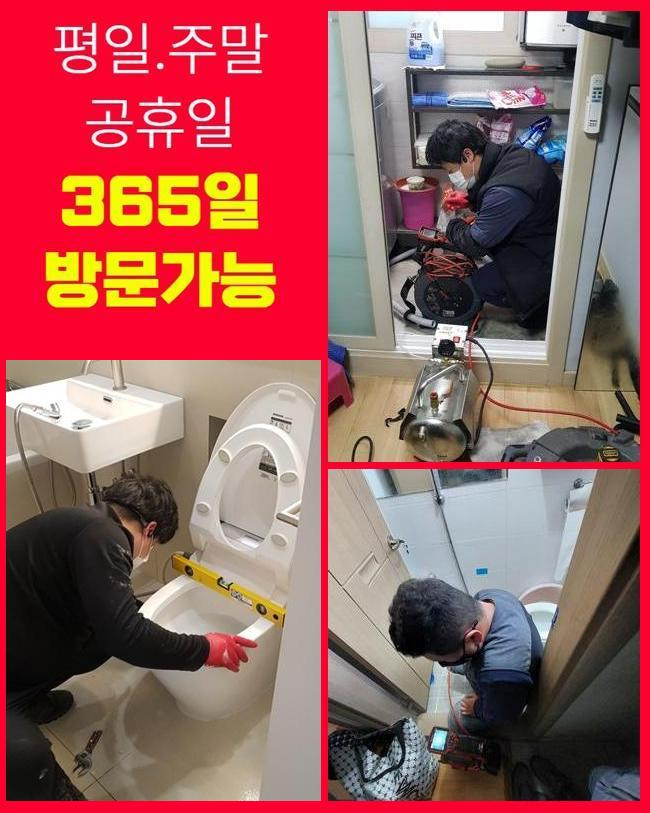
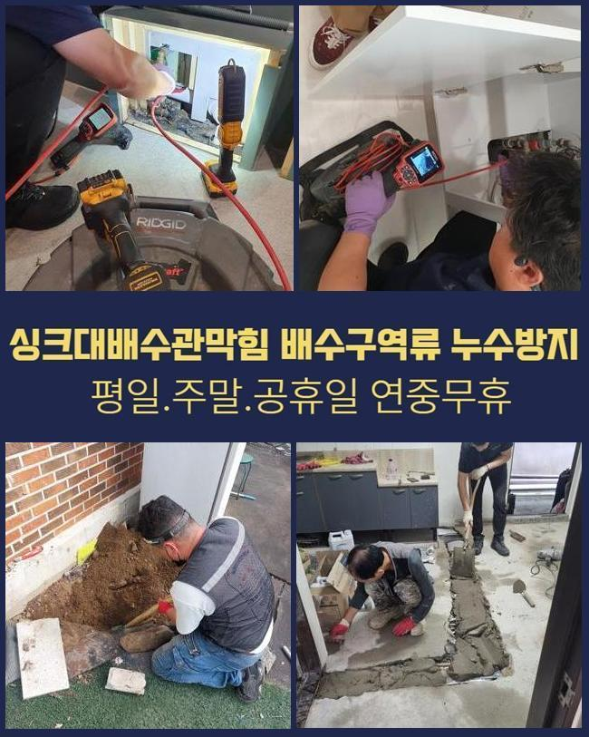
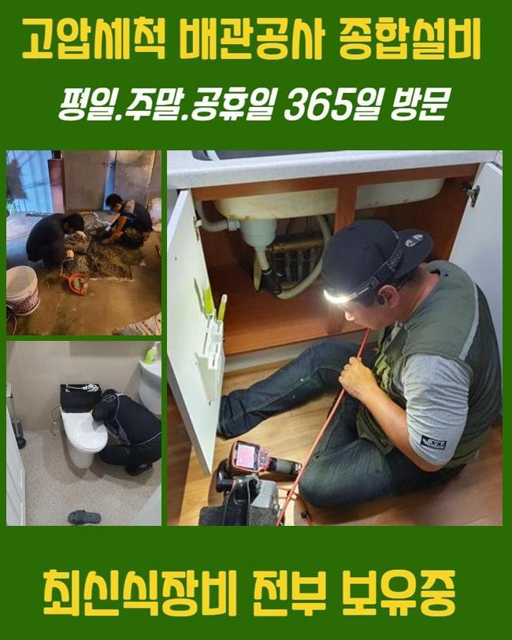
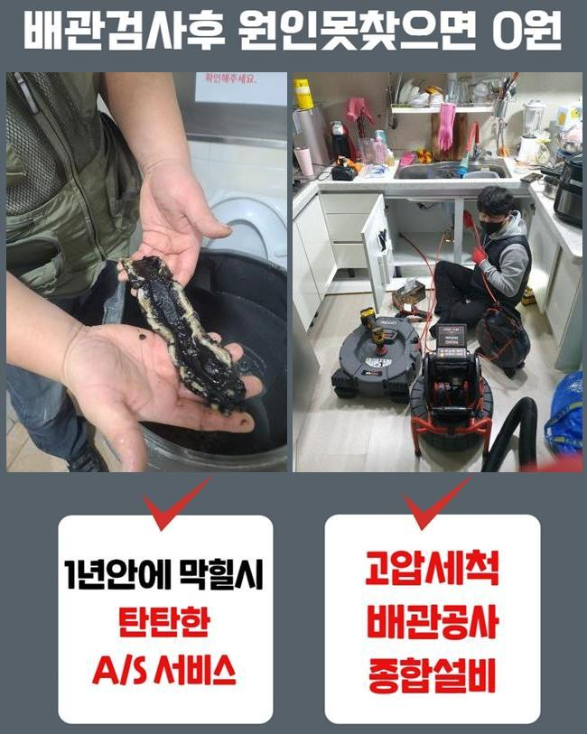
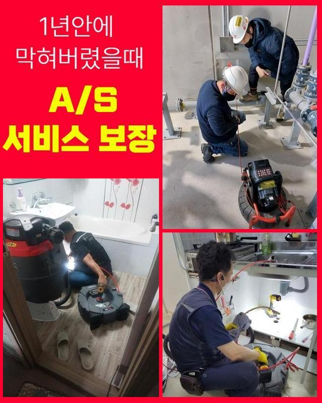
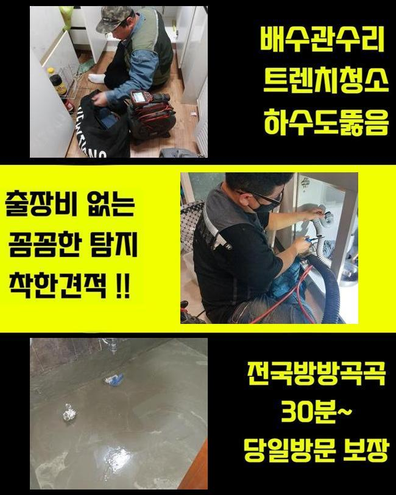

🏠 의정부 낙양동오수관뚫음 녹양동 하수구뚫어주는곳 설비업체
용인 싱크대막힘 전문 시공 후기

📋 작업 개요
- 위치: 용인
- 서비스 유형: 싱크대막힘, 하수구막힘, 배관막힘, 누수수리, 역류해결, 뚫는업체, 배관청소, 고압세척
- 작업 일시: 2025. 5. 18. 16:43
- 업체명: 하수구수사대 (010-5615-2118)
🔍 문제 상황
의정부 낙양동오수관뚫음 녹양동 하수구뚫어주는곳 설비업체
어떠한 곳이라도 배관이 막히면 조속하게 방문해서 해결해주는 업체인데요
많은분들이 자가적으로 뚫어보실때 베이킹소다나 락스를 활용하실텐데요
락스같은것을 사용하게되면 하수구안에 쌓여있는 오염물질들을 소거하는데 유용할수는 있어요
그치만 이러한 방법들을 이용해봐도 제거하기 까다로운 오염물이 있는데요
이물이 쌓이면서 덩어리형태로 굳게되는 석회물이에요
석회물들은 내시경을 활용하여 막힌상황을 살펴본후 올바른 방식으로 이물을 없애주는것이 필요한데요
업체에게 맡겼을때 어떤식으로 단단한 이물질들을 제거해내는지 작업사례를 통하여 공개해볼게요
방문한장소는 가정안에서 발생하게된 막힘문제에요
욕실바닥부분 하수관이 문제가생겨 문의를 주셨습니다
저희들은 고객분께서 말씀하신것과 하수구를 살피며 원인파악에 돌입했죠
고객께서는 얼마전부터 물이 빠지는것이 점차점차 느려지고 있었고 악취까지 난다고 하셨죠

🔎 원인 분석
💡 전문가 진단: 정밀 진단 장비를 사용하여 슬러지의 고착 여부를 판명하고 타격/세척 작업을 실시했습니다.
직접 뚫어보려고 시중에서 구매한 용액을 통해 세척하신 상황이었어요
그러나 이상한 냄새는 해결되지않고 배수상태도 원활하게 돌아오지 않으셨죠
시간이지날수록 되레 배수구는 심각하게 막혀버려서 저희업체로 요청해주신 것입니다
저희들은 고객분께서 전달해주신 증상들과 현장상황을 보면서 원인 찾기에 돌입했어요
악취문제가 발현된 막힘현상의 경우에는 막힌연유를 자세하게 알아내는것이 중요하겠습니다
먼저 석션장비를 활용하여 넘친물을 빨아들인뒤 부착되어있는 하수도트랩을 분해하기 시작했어요
배관주변을 살펴봤지만 내시경없이는 원인파악이 불가했죠
하수구내부를 확인시켜주는 하수구카메라를 투입해봤어요
내시경이 배관내에 진입하니 통로내에 잔해물들이 모니터에 나타났죠
확인했지만 막힘정도를 일으킬 상태는 아니다보니 조금더 깊히 주입시켜보니 막힌원인에 대해 알아낼수있었죠
각종 오염물들이 오랜기간 퇴적되버린 석회덩어리 이물이었어요
배관속에 달라붙어 누적된 덩어리이물은 물길자체를 좁게하고 통로안에 여러 이물들이 지속적으로 썩으면서 냄새문제도 발생한거죠

🔧 작업 과정
고착물질의 경우엔 잔해물이 쌓이며 덩어리형태로 만들어지는데 하수도막힘의 확실한 원인인데요
시간의 흐름마다 딱딱한 형태로 변할수있고 제거방식도 굳은상태마다 차이점이 있답니다
이번 장소에서 포착된 슬러지들은 단단한 정도와 크기가 심해보이지 않았기에 흡입기로 제거가 가능했어요
석션도구는 하수구내에 누적된 잔여물들을 흡입하는 기계라고 생각하시면 됩니다
하수구파손이 발생되지않게 세심한 방법으로 청소하고자 내시경도 투입한채 작업해 주었죠
하수구안쪽을 들여다보며 이물질이 보이는 통로쪽에 석션기를 작동하여 오염물을 없앴어요
하수관 가장 안쪽까지 하수도촬영기로 살펴보며 눌러붙은 잔해물과 물때들을 제거해줬습니다
제거과정을 꼼꼼히 착수한후 배관카메라로 한번더 하수구안을 체크하는것을 반복하여 진행했답니다
반복했더니 배관안속에 자리에 남아있던 기름때나 이물들이 완벽히 청소된것이 화면에보였죠
오염물들을 배출하니 악취증세도 줄어드는것을 확인할수있었네요
마무리 과정으로 배수를 살펴보기위해 수전을켜서 배수상황을 테스트했어요
많은양으로 이물질들을 제거했기에 문제없이 빠져나가는것을 확인할수 있었는데요
테스트하는 작업을 끝내고나서 철수했어요
재차 말씀드리지만 전문업체를 통해 해결하는것이 요구되는 이유를 알려드리자면 막힌이유에 관한 부분들을 명확히 밝혀내야지만 해결할수 있습니다
굳어버린 상태에 이물이라면 용액같은 용품으로 없애기란 어렵답니다
혹시라도 방치하실경우 누수문제나 역류현상으로 이어지기도 한답니다
단단하게 오염물이 석회화 되었다면 석션외에 다른도구가 사용되기도 합니다
샤프트기라는 장비로 석회물들을 분쇄할수있어 막힘상태마다 이용되는 장비들이 다를수있답니다
하수도가 막히게 되었을때 주변에서 알려준 다양한 방법들로 해결이 가능할거라고 생각하시는데요


✅ 작업 완료
이렇게 여러번 시도해봐도 물이 빠지는게 느린상태로 빠져나가거나 악취문제까지 배수관에서 동반되는경우 전문업체에 맡기는게 좋습니다
씽크대나 욕실같이 물이용이 많은장소는 정기적인 점검을통해 막힘현상들을 예방하는것이 중요하답니다
셀프적으로 방지할수있는 방식을 간략히 말씀드리면 트랩과 배수구망을 설치해보시면 악취증세와 막힘현상을 어느정도는 막을수있죠
상가시설과 같이 여러세대로 이뤄진 건물이라고 한다면 신속대처가 필요할수 있으니 연락주시면 1시간내로 출동해드릴게요
작업계획을 확실히 공개하고 있사오니 고객께서 작업을 원하실때 문의주신다면 상세하게 안내 도와드릴게요




⚠️ 베란다 누수 및 방수 관리 방법
- ✅ 비가 많이 올 때 창틀 주변이나 아래층 천장에 얼룩이 생기는지 정기적으로 확인해 보세요.
- ✅ 우수관 주변 실리콘 마감이 들뜨거나 깨진 틈새가 있는지 손상 여부를 수시로 체크하세요.
- ✅ 베란다 바닥 타일의 줄눈(메지)이 소실되면 그 틈으로 물이 침투하여 누수가 유발됩니다.
- ✅ 누수 의심 증상 발견 시 방치하면 아래층 손실이 커지므로 즉시 전문가의 진단을 받으십시오.
💡 핵심 정리
- 확실한 장비 작업(내시경 점검 및 샤프트 스케일링)으로 원인을 뿌리 뽑습니다.
- 작업 후 1년 이내에 동일한 부위 재발 시 100% 무상 A/S 서비스를 보장합니다.
- 서울 · 경기 · 인천 전 지역에 24시간 언제든 긴급 출동할 수 있도록 항시 대기 중입니다.
❓ 자주 묻는 질문 (FAQ)
🚨 용인 싱크대막힘 문제로 고민이신가요?
정확한 원인 진단과 확실한 시공으로 재발 없는 해결을 약속드립니다.
24시간 긴급 출동 | 서울 · 경기 · 인천 전지역 | 1년 내 재발 시 무상 A/S